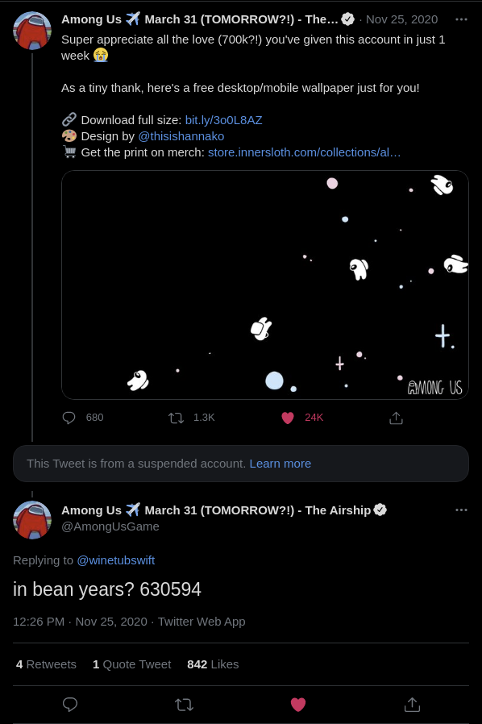

Among Us tweeted this (retrieved on March 30th, 2021):
The suspended account was asking the age of the manager. I remember seeing this tweet when it was first sent!
I decided to go on a hunt. And in no time at all, I found the social media manager. Their name is Victoria Tran (don't worry, they've publicly talked about it before!)
Shortly there after, I found a tweet from the manager where they celebrate their birthday, and state their age. I won't share it here for privacy reasons (although, it was only last year), but it was right there!
226 days are between their birthday and the original bean years tweet. That's 0.619178082192 in decimals. So, combining those two numbers together, then dividing 630594 by the combined numbers, gives us 23689.4617126!
When calculating for human years, you divide bean years.
When calculating for bean years, you multiply human years.
Math's fun, eh?
Not affiliated with Innersloth or Among Us.